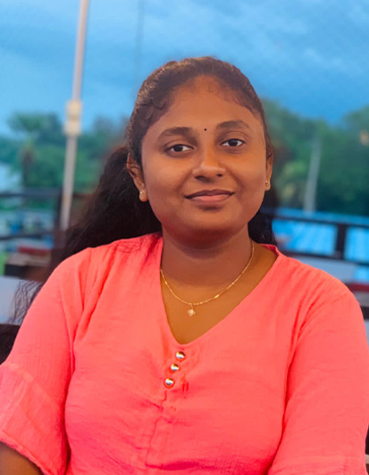

Hi, This is Mayrariniy
And I'm a
Ready to elevate your online presence or bring your web project to life? I'm here to collaborate and turn your ideas into reality. Whether you're a startup, small business, or individual entrepreneur, let's create something amazing together.
As an aspiring Computer Engineering undergraduate, I am poised to apply my technical skills, drive innovation, and contribute to dynamic success. With a passion for technology and a commitment to learning, I am eager to embark on a journey of continuous growth and impactful contributions in the field. My goal is to leverage my knowledge in areas such as web design and frontend development to create intuitive and engaging digital experiences. I am excited about the possibilities of merging creativity with technical expertise to solve real-world challenges and make a difference. Collaborating with like-minded individuals and being part of a forward-thinking team is where I thrive, and I am ready to bring fresh perspectives and enthusiasm to any project. Let's connect and explore how I can be a valuable asset to your team and contribute to mutual success.